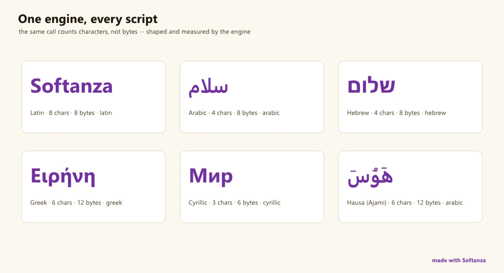

Chaînes de caractères
Un sur-ensemble, correct au point de code, des chaînes de Python et de Rust ; la lacune nette est la couche locale d'ICU.
6 Strong · 4 Solid · 1 Partial · 1 Emerging
Mesuré contre : ICU · Rust/Python str · Boost.Locale · Dossiers : base/string · Le guide des fonctions de ce domaine

Softanza's string is one Zig engine (utf8proc + PCRE2 + SheenBidi/HarfBuzz) behind a 2,212-method Haro face that is codepoint-correct end to end and reaches from core slicing through similarity, formatting and text analytics: a genuine superset of Python/Rust str. What it deliberately is not is ICU: no locale collation, no CLDR, no legacy charset transcoding.
Ce qu'un maker en fait, et ce qui se distingue
- A genuine superset of Python/Rust str on breadth and Unicode-correctness
- Between/sections finder vocabulary wider than any str library exposes
- A similarity and distance lane that ICU does not even enter
- Formatting and text-analytics lanes general str libraries do not have
Ce qui est dû
- Locale-aware collation + CLDR foundation (ICU's crown jewel)
- Finish the narration audit: ~736 of 999 blocks unproven
- Legacy charset transcoding (Shift-JIS, GBK, ISO-8859-*, Windows-125x)
- Grapheme-cluster cursor (UAX#29) and line-break (UAX#14) primitives
Un exemple, exécuté
Un simple len() compte des octets ; le moteur compte des caractères. Six appels, six réponses.
? Q("Softanza").Uppercased()
? Q("Born in Africa. Useful to the World!").NumberOfWords()
? Q("مرحبا بالعالم").Script()
? len("سلام")
? Q("سلام").NumberOfChars()
? Q("Niamey").Reversed()SOFTANZA 7 arabic 8 4 yemaiN
exécuté le 2026-10-01 à 01:40, Softanza au commit 0e72e2e2c
Les couloirs, un par un
Les couloirs et leurs notes sont cités tels qu'ils ont été lus à la source, le Read from the source on 2026-09-16.